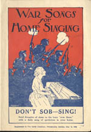

This is an archived copy of History Matters, provided by the Roy Rosenzweig Center for History and New Media. To explore this content in a new interface, visit Who Built America?.

National Jukebox: Historical Recordings from the Library of Congress
http://www.loc.gov/jukebox/
Created and maintained by the Library of Congress.
Reviewed July-Aug., 2012.
The Library of Congress recently partnered with Sony Music Entertainment to launch National Jukebox, a Web site that streams ten thousand music and spoken-word recordings released by the Victor Talking Machine Company between 1901 and 1925. The site features various ways to browse the otherwise overwhelming collection. For example, visitors can stream hundreds of recordings by such popular vocalists as Al Jolson, Alberta Hunter, and Enrico Caruso. Or they can compare multiple versions of compositions interpreted and recorded by different conductors, ensembles, or orchestras over time. While some may find interest in the “Classical,” "Opera,“ "Spoken Word,” and “Religious” tabbed categories, the “Popular Music” section includes subgenres of “Blues,” "Ethnic Music,“ "Humorous Songs,” "Musical Theatre,“ "Ragtime and Jazz,” "Traditional/Country,“ "Whistling,” and “Yodeling.”
The site’s browsing options can quickly generate many results that will be of interest to historians in multiple fields. Visitors who browse by “place” will find approximately two hundred spectacular recordings from Latin American locations such as Havana, La Paz, and Caracas. Recordings from Tokyo, Constantinople, and Bucharest demonstrate that the company expressed an early interest in markets far beyond the United States. The site’s authors classified over seven hundred recordings as “ethnic characterizations”recordings comprising “text and music that may involve characters and/or musical elements that may utilize outmoded and offensive stereotypes of nationalities, religions, or races.” Many of these recordings demonstrate the early twentieth-century incarnation of the minstrel and, later, “coon song” genres that saturated U.S. popular culture for most of the nineteenth century. Many other groups also figure in this category, including American Indians and the Irish, which both featured in the 1906 Arthur Collins and Byron G. Harlan recording, “Arrah Wanna.” Visitors can also search by “language” and by “target audience” to find an exceedingly diverse array of recordings that the Victor Company marketed to U.S. immigrant communities. The “Spoken Word” category reveals that a number of U.S. presidents recorded speeches for the company. Theodore Roosevelt, for example, reproduced in Emporia, Kansas, an excerpt from his own popular “The ‘Abyssinian treatment’ Administered to Standard Oil.”

The site includes well-organized metadata provided by the Encyclopedic Discography of Victor Records Project (at the University of California, Santa Barbara), as well as a glossary and numerous narrative and interactive features. Visitors can learn how acoustic recording worked in the pre-electronic recording days, as well as how the staff at the Library of Congress Packard Campus for Audio-Visual Conservation painstakingly created such brilliant digital transfers. The site also includes an interactive version of the 1917 Victrola Book of the Opera (by S. H. Rous) which provides information on 110 operas, performer profiles, and links from the catalog listings to the corresponding music streams. In addition, true to its name, the site operates as a jukebox, allowing visitors to create and share their own playlists or to browse the staff playlists, which focus on themes such as “Prohibition and Temperance” or “Black Broadway and Tin Pan Alley.”
Not all Victor recordings from the period exist on the site, as many were lost over the years or are unavailable in the project’s accessible collections. However, the library plans to add pre-1925 recordings from Columbia Records and Okeh Records. Although these recordings are at least eighty-five years old, their ownership remains firmly under Sony’s control rather than in the public domain. For this reason, although Sony provided the rights to stream the recordings, visitors may not download them. It is unclear what commercial value Sony continues to see in these recordings, but the historical value is immense, both in terms of research and classroom use.
In 2001 the University of Virginia assistant music librarian Mary Prendergast curated Lift Every Voice: Music in American Life to coincide with the physical exhibition of the same name. The exhibit title was taken from James Johnson Weldon and J. Rosamond Johnson’s composition “Lift Every Voice and Sing” (1900), which became better known in the mid-twentieth century as the “negro national anthem.” The exhibit was designed in part to showcase the significant collections of vernacular music and related ephemera held in the university’s libraries. The site succeeds in demonstrating the variety of pertinent university collections, but the limited interactivity quickly dates the twelve-year-old site.
Content suffers as well. The “Overview” page is misleading, as it unfortunately does not provide visitors with a synthesis of the exhibit nor its rationale for organization. The table of contents reveals the exhibit’s six main sections. The section pages typically link to two or three subsections, and each page includes textual commentary from the physical exhibit. In addition, each page features scans of the books or textual ephemera that were included in the physical exhibit, as well as photographs of other mounted objects such as instruments and record covers.
The first section, “Ballads,” provides a brief overview of the history of collecting English and Anglo-American folk ballads, as well as a history of folk music as it became known through the likes of Woody Guthrie, Huddie Ledbetter, and Pete Seeger in the 1940s and 1950s. The next section, “Hymns and Spirituals,” provides more opportunity for the library to showcase its collections; it features several late seventeenth- and early eighteenth-century hymnals, as well as nineteenth-century sacred harp instructional songbooks. The “Patriotic Odes” section includes the scan of an autographed manuscript of “(I Wish I Was in) Dixie’s Land” (better known as “Dixie”), written in 1859 by Daniel Decatur Emmett, one of the most successful and significant blackface minstrels, whose papers are housed on campus. “Minstrels and Musicals,” the fourth site section, does little to engage the scholarship on minstrelsy that was proliferating at the time the exhibit was developed, while the fifth section, “Protest Songs,” consists mainly of scans of record covers associated with the 1960s hippie and antiwar movements. The final section, “Virginiana,” enabled Prendergast to feature manuscripts that reveal the musical life of Thomas Jefferson, including the dictated memoirs of Isaac Jefferson, whom Thomas Jefferson had enslaved.
Although the site features an interesting selection of rare books and manuscripts from the university’s libraries, the exhibit lacks a unifying narrative or an argument. In addition, the technology used allows the visitor to see only a one-page area (or less) of a scanned book when the screen view is expanded. (Contrast this with the technology that allowed the Library of Congress to create the interactive Victrola Book of the Opera.) Finally, the music samples that accompany the images and text are just thatbrief snippets of songs, restricted by copyright laws. Together, both sites reveal the evolution of Web technology, utility, and design as they relate to music archives, as well as the power of copyright law, as it likely will continue to circumscribe our application of music in the digital humanities for decades to come.
John W. Troutman
University of Louisiana, Lafayette
Lafayette, Louisiana